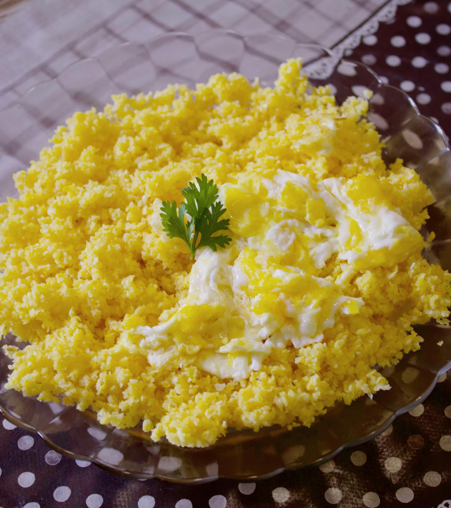

Joshua's Recipes
This is Recipe 1, Scrambled Eggs
Home Page
Recipe 2, Tortillas
Attributions and Credit

Scrambled eggs are a simple and quick dish, this was the
first dish I was taught to make incase I was hungry.
Even though it is called scrambled eggs, In spanish it is called "huevos revueltos"
which can mean either scrambled or a omelette but its used interchangeably.
This dish is simple but is customizable with
different ingredients like cheese, vegetables, and meat.
This dish should be taught to everyone, its a good
basic one to learn and to make when you are hungry
- My Dad
Prep Time Approx:10 Minutes
Serves 1 Person
Ingredients:
- 2 Eggs (3 if your really hungry)
- 1 tablespoon of butter or oil
- 1 tablespoon or 2 pinches of salt
- Oil/Corn oil or butter
- Optional Extras: Cheese, vegetables,
meats, spices, etc
Instructions:
- Crack the eggs into a bowl
- Add the salt and any optional extras you want
- Whisk the eggs until the yolk and whites are fully mixed
- Heat a non-stick pan on medium heat
- Add the butter or oil to the pan and
Let it melt and coat the pan
-
TIP:If using butter, make
sure it does not brown or burn
- Pour the egg mixture into the pan
- Let the eggs cook for a few seconds
until they start solidify from a liquid
- Using a spatula, gently pick it the eggs
from the bottom then flip it or dice them.
- Continue to cook and flipping, or continue to dice them,
until the eggs are a mix of white with yellow.
- Turn off the heat and let the remaining heat finish it off
- Serve immediately and enjoy
Enjoy your scrambled eggs!
You can pair this dish with: Recipe 2, Tortillas
Website made by Joshua